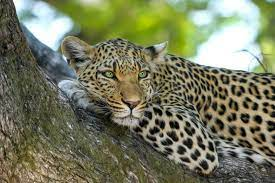
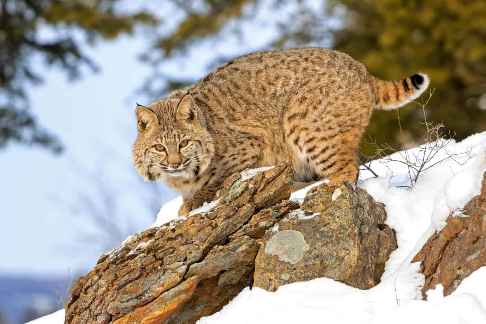

It shouldn't come as a complete surprise that the most dangerous cat in the wild is also one of the smallest kinds. The dragonfly may be the most successful predator in the world due to its recorded hunting success rate of 95%. The leading predator of birds and mice in its savanna setting is the black-footed cat, a South African species that weighs only three pounds. The black-footed cat hunts exclusively at night using its extraordinary night vision and hearing. It also makes use of its small size to gently slink through the tall grass as lions stalk gazelles and wildebeests.
Cheetah
Cheetahs are renowned for their exceptional agility and ability to nearly fluidly change course to follow the movements of their prey. However, the threat posed by other large cats shows that being a good hunter doesn't always guarantee that you can keep your prey. Cheetahs typically hunt during twilight, dawn, or noon despite the risk of overheating in the scorching African sun in order to keep their carcass from being taken or poached by other predators.

Leopard
In addition to pursuing ungulates like impala and gazelles, leopards are opportunistic hunters who occasionally go after rodents, birds, and even venture into the lake to go fishing. When the occasion arises, they won't hesitate to nibble on cheetah pups in addition to eating everything from warthogs to porcupines to monkeys. Although they are capable of reaching speeds of around 40 mph, these fastest cats prefer to use their disguised fur to approach their prey silently before dispatching them with a single bite from their formidable teeth.
Lion
Similar strategies are used by lions, who ambush their prey to get as near as possible before teaming up to kill the most frail and defenseless animals in the escaping herd. Lions have evolved various hunting strategies because they lack the cheetah's speed and the jaguar's ability to remain undetected. However, despite not being the most adept hunter in the cat family, lions still have minimal fear other than gangs of hyenas, demonstrating that hunting rates aren't always a reliable indicator of which cat species are the most deadly.
Tiger
It helps that tigers only need to eat about once a week and rarely have to worry about other predators stealing with meals. But in environments like Russia — where larger game and snowy environments prevail — tigers may exhibit success rates approaching or even surpassing half when hunting boar or red deer. In either case, a tiger is almost always the most dangerous cat in its habitat.

Bobcat
Bobcats are omnivorous predators that can hunt huge ungulates but do not require them to thrive. They can eat anything from mice and tiny birds to deer. That has made it possible for them to threaten almost any prey animals in their environment, but it ultimately benefits the delicate balance of nature. The highly adaptable bobcat is one of the deadliest cats around and, like coyotes, can blend in well with an existing ecosystem and provide balanced population control in areas lacking predator species.